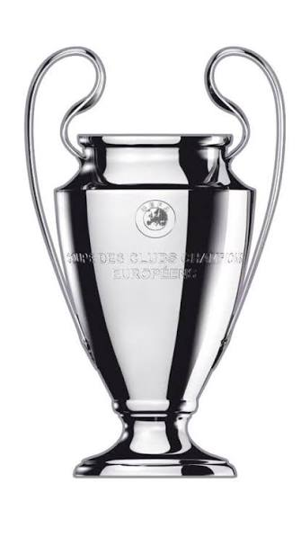
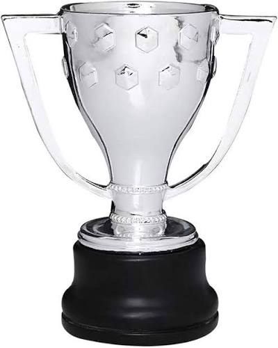
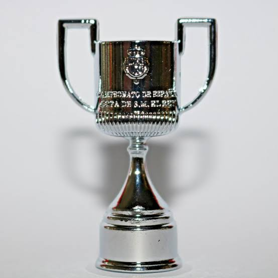
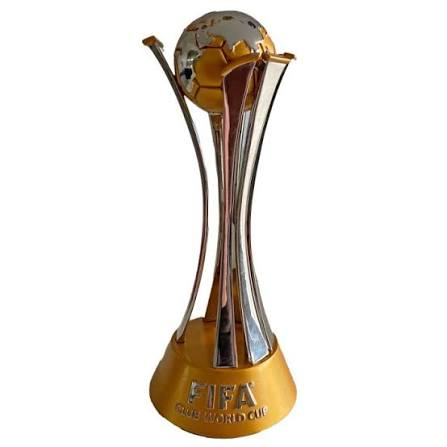
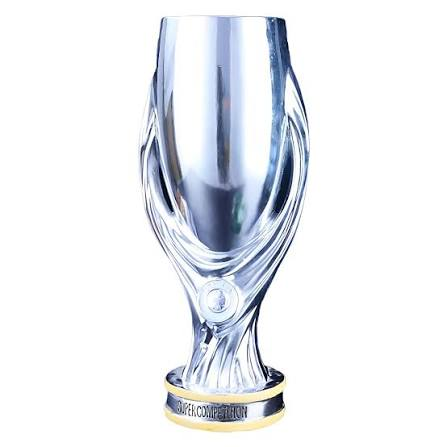
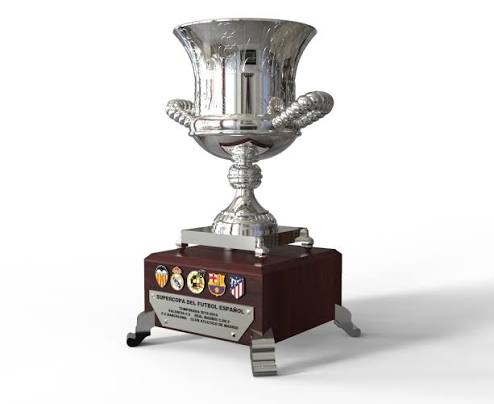

Real Madrid C.F. History
Founded: March 6, 1902
Nickname: Los Blancos, Los Merengues
First President: Juan Padrós
FIFA Club of the Century: Awarded 2000
The Legacy of Los Blancos
Real Madrid Club de Fútbol has grown to become one of the most widely supported and decorated football clubs in the world. Officially founded in 1902 as Madrid Football Club, the club was granted the royal title ("Real") by King Alfonso XIII in 1920. Throughout its storied history, Real Madrid has established an unprecedented standard of excellence, dominating both Spanish and European football.
Trophies & Major Honours

UEFA Champions League
15 Titles
La Liga
36 Titles
Copa del Rey
20 Titles
FIFA Club World Cup
5 Titles
UEFA Super Cup
6 Titles